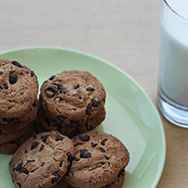

Chewy Chocolate Chip Cookie Recipe

These scrumptious chocolate chip cookies are simple to make and guarenteed to satisfy. With crisp edges and a chewy middle, these cookies are sure to impress your guests. Serve with a tall glass of cold milk to complement these sweet treats.
Ingredients
- 1 cup butter, softened
- 1 cup white sugar
- 1 cup packed brown sugar
- 2 eggs
- 2 teaspoons vanilla extract
- 3 cups all-purpose flour
- 1 teaspoon baking soda
- 2 teaspoons hot water
- 2 cups semisweet chocoalte chips
- 1 cup chopped walnuts
Directions
- Preheat oven to 350 degrees F (175 degrees C)
- Cream together the butter, white sugar and brown sugar until smooth. Beat in the eggs one at a time, then stir in the vanilla. Dissolve baking soda in hot water. Add to the batter along with salt. Stir in flour, chocolate chips, and nuts. Drop large spoonfuls onto ungreased pans.
- Bake for about 10 minutes in the preheated oven, or until edges are nicely browned.
Source: Best Chocolate Chip Cookies